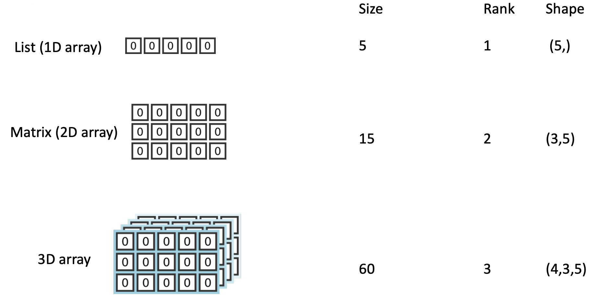

Introduzione a Numpy
Contents
4. Introduzione a Numpy#
Anche se la Standard Library di Python offre molte funzioni utili per l’analisi dei dati, è conveniente utilizzare varie funzioni specifiche contenute in altri moduli. I moduli più utili per l’analisi dei dati sono:
Pandas per caricare e manipolare i dati,
NumPy per i calcoli numerici,
Matplotlib e Seaborn per visualizzare i dati.
In questo capitolo introdurremo NumPy. NumPy è l’abbreviazione di Numerical Python: un’estensione del linguaggio pensata per il calcolo algebrico e matriciale. Numpy consente di lavorare con vettori e matrici in maniera più efficiente e veloce di quanto non si possa fare con le liste e le liste di liste (matrici) di Python. Inoltre, Numpy aggiunge una serie di funzioni matematiche di base e la possibilità di generare numeri casuali.
4.1. Gli array nel modulo NumPy#
In Python puro abbiamo a disposizione oggetti numerici (interi e a virgola mobile) e contenitori (liste, dizionari e insiemi). Numpy fornisce un nuovo tipo di dato: un array N-dimensionale (ndarray). Il costrutto ndarray è una struttura dati omogenea (a differenza di una lista Python) che può avere dimensioni qualunque.
Terminologia
Con size di un array intendiamo il numero di elementi presenti in un array;
Con rank di un array si intende il numero di assi/dimensioni di un array;
Con shape di un array intendiamo le dimensioni dell’array, cioè una tupla di interi contenente il numero di elementi per ogni dimensione.
{kind=link}

Il modo più semplice per creare un ndarray è quello di convertire una lista Python. Per esempio, possiamo creare un array 1-D nel modo seguente:
import numpy as np
a = np.array([1, 2, 3, 4, 5, 6])
Questo comando ha creato un vettore, chiamato a, con 6 elementi che sono i numeri interi indicati in parentesi quadra:
a
array([1, 2, 3, 4, 5, 6])
Se voglio estrarre un singolo elemento del vettore lo indicizzo con la sua posizione (si ricordi che l’indice inizia da 0):
a[0]
1
a[2]
3
Un array 2-D si crea nel modo seguente:
a = np.array([[1, 2, 3, 4], [5, 6, 7, 8], [9, 10, 11, 12]])
a
array([[ 1, 2, 3, 4],
[ 5, 6, 7, 8],
[ 9, 10, 11, 12]])
Numpy offre varie funzioni per creare ndarray. Per esempio, è possibile creare un array 1-D con la funzione .arange(start, stop, incr, dtype=..) che fornisce l’intervallo di numeri compreso fra start, stop, al passo incr:
b = np.arange(2, 9, 2)
b
array([2, 4, 6, 8])
Si usa spesso .arange per creare sequenze a incrementi unitari:
x = np.arange(11)
x
array([ 0, 1, 2, 3, 4, 5, 6, 7, 8, 9, 10])
Un’altra funzione molto utile è .linspace:
x = np.linspace(0, 10, num=20)
x
array([ 0. , 0.52631579, 1.05263158, 1.57894737, 2.10526316,
2.63157895, 3.15789474, 3.68421053, 4.21052632, 4.73684211,
5.26315789, 5.78947368, 6.31578947, 6.84210526, 7.36842105,
7.89473684, 8.42105263, 8.94736842, 9.47368421, 10. ])
Fissati gli estremi (qui 0, 10) e il numero di elementi desiderati, .linspace determina in maniera automatica l’incremento.
Una proprietà molto utile dei ndarray è la possibilità di filtrare gli elementi di un array che rispondono come True ad un criterio. Per esempio:
x[x > 7]
array([ 7.36842105, 7.89473684, 8.42105263, 8.94736842, 9.47368421,
10. ])
perché solo gli ultimi sei elementi di x rispondono True al criterio \(x > 7\).
4.2. Dimensioni dell’array#
Un ndarray è una griglia di elementi che possono essere indicizzati in vari modi. Le dimensioni dell’array sono chiamate “assi”. L’array a ha due assi:
a
array([[ 1, 2, 3, 4],
[ 5, 6, 7, 8],
[ 9, 10, 11, 12]])
a.ndim
2
Ci sono 3 array di 4 elementi ciascuno:
a.shape
(3, 4)
Il primo elemento dell’array a è
a[0]
array([1, 2, 3, 4])
Gli indici funzionano come ci possiamo aspettare, ricordando che il primo indice fa riferimento alla lista di array e il secondo indice agli elementi all’interno di ciascun array:
a[1:3, 1:3]
array([[ 6, 7],
[10, 11]])
Per array 1-D, possiamo scrivere, ad esempio:
x
array([ 0. , 0.52631579, 1.05263158, 1.57894737, 2.10526316,
2.63157895, 3.15789474, 3.68421053, 4.21052632, 4.73684211,
5.26315789, 5.78947368, 6.31578947, 6.84210526, 7.36842105,
7.89473684, 8.42105263, 8.94736842, 9.47368421, 10. ])
x[0:5]
array([0. , 0.52631579, 1.05263158, 1.57894737, 2.10526316])
4.3. Operazioni sugli array#
Useremo Numpy per eseguire operazioni algebriche sugli elementi di un vettore. Gli elementi del vettore corrisponderanno, per esempio, alle misure ottenute su una qualche variabile. Usando Numpy possiamo automatizzare le normali operazioni aritmetiche che siamo abituati a svolgere su una coppia di numeri. Supponiamo, ad esempio, di volere calcolare l’indice BMI:
Supponiamo inoltre di avere raccolto i dati di 4 individui:
m = np.array([1.62, 1.75, 1.55, 1.74])
kg = np.array([55.4, 73.6, 57.1, 59.5])
m, kg
(array([1.62, 1.75, 1.55, 1.74]), array([55.4, 73.6, 57.1, 59.5]))
dove m è l’array che contiene i dati relativi all’altezza in metri dei quattro individui e kg è l’array che contiene i dati relativi al peso in kg. I dati sono organizzati in modo tale che il primo elemento di entrambi i vettori si riferisce alle misure del primo individuo, il secondo elemento dei due vettori si riferisce alle misure del secondo individuo, ecc. Per il primo individuo del campione, l’indice di massa corporea è
55.4 / 1.62**2
21.109586953208346
Si noti che non abbiamo bisogno di scrivere 55.4 / (1.62**2) in quanto, in Python, l’elevazione a potenza viene eseguita prima della somma e della divisione (come in tutti i linguaggi). Usando i dati immagazzinati nei due vettori, lo stesso risultato si ottiene nel modo seguente:
kg[0] / m[0]**2
21.109586953208346
Se ora non specifichiamo l’indice (per esempio, [0]), le operazioni aritmetiche indicate verranno eseguite per ciascuna coppia di elementi corrispondenti nei due vettori:
bmi = kg / m**2
Otteniamo così, con una sola istruzione, l’indice BMI dei quattro individui:
bmi
array([21.10958695, 24.03265306, 23.76690947, 19.65253006])
Questo esempio mostra come le normali operazioni aritmetiche vengano applicate sugli array elemento per elemento.
4.4. Broadcasting#
È possibile eseguire un’operazione tra un array e un singolo numero (chiamata anche operazione tra un vettore e uno scalare) o tra array di due dimensioni diverse. Ad esempio
a
array([[ 1, 2, 3, 4],
[ 5, 6, 7, 8],
[ 9, 10, 11, 12]])
a * 2
array([[ 2, 4, 6, 8],
[10, 12, 14, 16],
[18, 20, 22, 24]])
NumPy capisce che la moltiplicazione deve essere eseguita in ogni cella. Questo concetto si chiama broadcasting.
4.5. Altre operazioni sugli array#
C’è un numero enorme di funzioni predefinite in NumPy che calcolano automaticamente diverse quantità sui ndarray. Ad esempio:
mean(): calcola la media di un vettore o matrice;sum(): calcola la somma di un vettore o matrice;std(): calcola la deviazione standard;min(): trova il minimo nel vettore o matrice;max(): trova il massimo;ndim: dimensione del vettore o matrice;shape: restituisce una tupla con la “forma” del vettore o matrice;size: restituisce la dimensione totale del vettore (=ndim) o della matrice;dtype: scrive il tipo numpy del dato;zeros(num): scrive un vettore di num elementi inizializzati a zero;arange(start,stop,step): genera un intervallo di valori (interi o reali, a seconda dei valori di start, ecc.) intervallati di step. Nota che i dati vengono generati nell’intervallo aperto [start,stop)!linstep(start,stop,num): genera un intervallo di num valori interi o reali a partire da start fino a stop (incluso!);astype(tipo): converte l’ndarray nel tipo specificato
Per esempio:
x = np.array([1, 2, 3])
x
array([1, 2, 3])
[x.min(), x.max(), x.sum(), x.mean(), x.std()]
[1, 3, 6, 2.0, 0.816496580927726]
4.6. Lavorare con formule matematiche#
È facile implementare le formule matematiche sugli array. Consideriamo, ad esempio, la formula della deviazione standard che discuteremo nel capitolo Indici di posizione e di scala:
L’implementazione su un array NumPy è la seguente:
np.sqrt(np.sum((x - np.mean(x)) ** 2) / np.size(x))
0.816496580927726
Questa implementazione funziona nello stesso modo sia che x contenga 3 elementi (come nel caso presente) sia che x contenga migliaia di elementi. Si noti l’uso delle parentesi tonde per specificare l’ordine di esecuzione delle operazioni.
Per prima cosa calcoliamo la media degli elementi del vettore x usando np.mean(x). Questa operazione produce uno scalare:
np.mean(x)
2.0
Poi eseguiamo la sottrazione \(x_i - \bar{x}\) per tutti gli elementi di x (broadcasting):
x - np.mean(x)
array([-1., 0., 1.])
Eleviamo al quadrato gli elementi del vettore che abbiamo ottenuto:
(x - np.mean(x)) ** 2
array([1., 0., 1.])
Sommiamo gli elementi del vettore:
np.sum((x - np.mean(x)) ** 2)
2.0
Dividiamo il numero ottenuto per \(n\). Questa è la varianza di \(x\):
res = np.sum((x - np.mean(x)) ** 2) / np.size(x)
res
0.6666666666666666
Infine, per ottenere la deviazione standard, prendiamo la radice quadrata:
np.sqrt(res)
0.816496580927726
Il risultato ottenuto coincide con quello che si trova applicando la funzione np.std():
np.std(x)
0.816496580927726
4.7. Watermark#
%load_ext watermark
%watermark -n -u -v -iv -w -p pytensor
Last updated: Sun Jan 15 2023
Python implementation: CPython
Python version : 3.10.8
IPython version : 8.7.0
pytensor: 2.8.11
numpy: 1.24.1
Watermark: 2.3.1